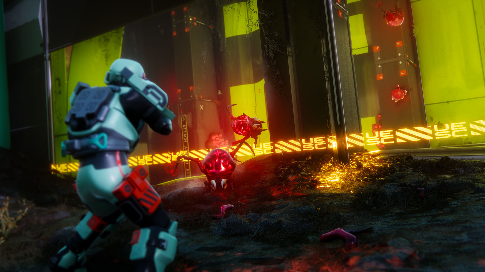

FILE 09 // A GRAVEYARD OF POSSIBILITIES // 5 ZONES
CRYO ARCHIVE // BUNGIE PRESS KIT
Zones
Every map has extraction points, the exfils. A raid ends at an exfil: the loot belongs to whoever reaches the point and leaves through it. Die before that and everything you brought into the raid stays on the field. Until you extract, the loot in your backpack isn't yours. canon
NEW RUNNER > do your first raids on Perimeter and leave through an exfil even with a half-empty backpack. Junk you carried out beats loot you lost.
09.1
Route
Where to dropFrom easy to endgame
Perimeter is the starting zone and the safest one, so begin there. Dire Marsh and Night Marsh are much more dangerous; that is where the Anomaly misbehaves the most. Outpost has heavy UESC military security. The Cryo Archive is endgame for a full squad of three, the last stop once you know what you are doing. canon
1.1.9.2Nightfall Refresh (October 6, 2026) reset zone access along with the rest of progress, so the route starts at Perimeter again. On weekends (Thu-Mon) there are Sponsored Queues; the first was Sponsored Perimeter, October 8-12. canon
Diagram // zones by risk level. Original archive graphic // scroll sideways09.2
Perimeter
Starting zoneColony outskirts

UESC perimeter // Bungie press kit, Season 1 Finale
The starting zone and the safest one: the colony's outskirts, relay stations and ruins. Everyone begins here. canon
Lore
The outskirts of the New Cascadia colony: relay stations, overgrown outposts, ruins. From here the colonists once beamed increasingly alarming data into space. The site started as a terraforming project on the western slope: engineer Isaak Kuzmin noted in his personal log the moment the project was shut down and the Data Wall was trucked in to watch something under the surface. The regions are named for what they did: Station (the former terraforming hub), Hauler (a mobile command post flown in because of the rocky terrain), North Relay and its "incomplete twin" South Relay (paired towers collecting data on anomalous energy fields), Overflow (runoff monitoring). In the "Grievance Log" a worker complains about mould in the equipment from the wet climate and about a film crew that went missing for seven weeks while putting up towers on a hill that was not on the topo map. canon
What's changing
1.1.5.4In Ordnance Heist (August 18 - September 1, 2026) the hunt for the Firestorm started here: Perimeter was where you farmed the Key Template and UESC Manifests, and one of the Firestorm lockers stood in this zone too. canon The step-by-step route was pieced together by community guides. datamine
Dec 8With the Symbiosis update Perimeter gets bigger and a substantial visual overhaul, plus a boss: a large alien Tick Queen. This Perimeter rework was originally promised for Season 3 on September 22. canon
The archive's bet: the Tick Queen is linked to the WEAVEworm worms. Checked on December 8, 2026 in FORECAST.LOG. theoryours
The most dangerous and strangest zone on the surface; reality breaks down here more often than anywhere else. canon
Lore
A deadly marsh with the Anomaly sitting at its centre. The zone belongs to the farming AI Darius, and the "Corrupt AI Data Logs" find it locked in a digital cage: "I am trapped here. Systems locked in random pattern." That is why the zone's AI Uplink is empty, even though it looks merely switched off. Regions: the Complex command building with its sealed upper floors, the automated Greenhouse with an eerily cosy pink conservatory, Bio-Research with pharma trials on alien flora, Algae Ponds, Maintenance and a temporary Quarantine. In the "Anchorite Provisions" record a survivor named Jasper describes the end of the colony: "Marathon goes dark, nobody talks", Caruso takes over as president, the fields and the people start getting sick, and the entry breaks off on "I can't die alone". The "Class B Anomalous Materials" catalogue collects incompatible theories of the Anomaly, from mass hallucination and a secret weapon to the idea that the planet itself is a living organism mounting an immune response. canon
What's changing
1.1.5.4In Ordnance Heist you completed the template task on Dire Marsh to earn the Firestorm Locker Key, and one of the Firestorm lockers stood here as well. canon
CHANNEL 09.4AFTER DARK // FULL COLOUR UNDER THE LENS
09.4
Night Marsh
Season 2 // since Jun 2, 2026The marsh at night
Night Marsh // Bungie press kit, Season 2 Launch
The same marsh after sunset: near-total darkness, a flashlight and UESC patrols. The zone arrived with the second season, Nightfall. canon
Lore
The same marsh after sunset. Near-total darkness, a flashlight, reinforced UESC patrols, creatures from the Anomaly, and hallucinations the game calls "digital psychosis". At night the shooter turns into a horror game. The zone also changes hands: the initiation terminal reports a "UESC fortification" in the upper Complex, guarded by the named boss WARDEN, and hacking the network towers exposes "local UESC stockpiles". The official cause of the disaster is buried in General Davic Reed's memo, the "Event Reinterpretation Guide", which states in plain text that the ship is lost ("The Marathon, as of now, is lost to us") and that the colony's strategy from now on is a controlled lie ("we must control the messaging"). There is a voice from inside the Anomaly too: a recording by physicist V. Cole, whose biomonitor announces mid-dictation "My suit biomonitor reads deceased", while she puts herself back together as a person and names her recorder Fermi so she isn't talking to empty air. The local fauna includes the Skrac, a night scavenger that mimics its victims' dying screams; the official protocol calls for "reclassification to Sentient Hazard" at its first meaningful reply. canon
What's changing
1.1.5.4In Ordnance Heist the template task could also be done at night: Night Marsh counted on the route the same as Dire Marsh. canon
A fortified UESC facility. Military loot is here, along with whatever the government guards hardest. canon
Lore
A fortified UESC facility under maximum guard. People come for military loot and for whatever the government hides behind all that security. The centre of the zone is Pinwheel with three wings (Command/Drone/Fabrication); catastrophic damage to the Fabrication wing hints at later trouble worse than in Perimeter, and the description closes on a warning: "If you ever feel safe here... YOU. ARE. NOT." The Codex calls the dormitories "humanity's first home on TAU CETI IV" and in the same breath warns about the especially lethal killbox of the central mess hall. An underground sect worshipping the angels of synthetic evolution was recorded here too ("Angels of red, blessed hosts of synthetic evolution"), along with an investigation into a shared nightmare: Dr. Mari Hassan writes that "the same dream" is seen by the whole colony, General Reed included. And an outsider logged in as "unknown user" switches the cameras in Quarantine Unit B back on and secretly copies the footage into a locked directory. canon
What's changing
1.1.5.4Outpost was the third place with Firestorm lockers in Ordnance Heist: with three keys you opened them in Perimeter, Dire Marsh or here. canon
The last step: the cryosleep deck aboard the UESC Marathon itself. Getting in is expensive on purpose. canon
Requirements
Runner level 25
All six factions
A loadout worth 5,000+ credits
A full squad of three
Not allowed
Solo drops
Rook
Counting on an easy exit
Lore
The cryosleep deck aboard the UESC Marathon, which hangs in orbit. A maze of cryopods and medbays where the colonists once slept their three-hundred-year sleep. The community opened the zone itself through the first season's ARG on March 20, 2026 (see file 12). The cryo pipeline is laid out by region: Control (the central cryofluid hub), Preservation and Biostock (going under, for the command staff and for the bulk of the colonists with their livestock), Cargo, Revival and Steerage (waking up). The "UESC Marathon Model" spec sheet, written in Captain di Roxas's voice with the editor's corrections left in the text, calls the ship "by far the largest ship the Solar system has ever produced": a crew plus 24,000 colonists and 11 AIs on board. The UESC got inside the Marathon with Operation "First Mile", whose orders read "Objective is presence, not force". In the data noise a "Compiler Trace" survived, a creation myth told by an ancient race: "we, the s'pht; we, of ancient seas and shallows". That ties it to the S'pht of the classic trilogy. canon
Spoiler // vaults, boss and Subject01
Getting in is expensive on purpose: Runner level 25, all six factions, a loadout worth 5,000+ credits and a full squad of three, with no solo drops and no Rook. Inside: a central hub and six linked vault sections, seven sealed spaces in total (Bungie's sacred number, duly noted). Each vault opens with a Marathon key plus eight batteries; some also need a coolant canister filled at the control terminal. The vaults drop AI subroutines, and collecting all six (plus the DNA Network keycard) opens the seventh vault and its boss: the S'pht Compiler. A classic-era alien, aboard a ship where, in this version of the timeline, the classic events supposedly never happened. canon
The seventh vault has its own named nightmare: UESC operation logs in the Codex (Operation Winter Walk, Operation Primetime) record an entity designated Subject01 that caused "full operational loss", and in the first season Runners found it in the seventh vault and killed it. There is no official explanation of what Subject01 is. canontheorynature unknown
What's changing
1.1.5Since July 21, 2026 the Cryo Archive has hosted Vault Breaker, the game's first experimental PvE mode: solo players, duos or trios work through a chain of vaults. The July 21 - August 4 window was extended to August 18; the mode returns October 20 - November 9. canon
1.1.9.2On October 6 zone access was reset, and the Cryo Archive opens again only after you earn your way back. Whether the entry thresholds themselves changed, the notes available to us don't say. canon
Design with a purpose
Getting out of the Cryo Archive is harder than leaving any other zone, by design. Players have a saying for it: "Cryo doesn't want you to leave." datamine
"Death hangs above": the Marathon in orbit over Tau Ceti IV // marathonthegame.com
CHANNEL 09.7MAP NOT DRAWN YET // FULL COLOUR UNDER THE LENS
09.7
New zone
March 2027Coming
Channel 09.7NO SIGNALThe map opens in March 2027
For March 2027 Bungie promises a big unnamed update with an entirely new zone. canon
What we know
The zone comes with connected PvE, PvP and PvEvP modes for solo players and teams, a reworked Cradle, quests and story, and new alien enemies. The zone's name and location have not been revealed. canon
The road there runs through Symbiosis on December 8: an expanded Perimeter, the first permanent PvE and the CyAc social space with a shooting range. canon
The press bet
The new enemies may include evolved Pfhor. theorykotaku
Zone Codex and records ("Grievance Log", "Event Reinterpretation Guide", "Compiler Trace" and others): marathonwiki.org, quotes checked against in-game text.
Bungie, Marathon news: Update 1.1.5 and Vault Breaker on the Cryo Archive; Update 1.1.9.2: zone access reset, Sponsored Perimeter, the return of Vault Breaker.
Polygon, Symbiosis roadmap: the expanded Perimeter and the Tick Queen; CQ Esports: the March 2027 update and the new zone; comicbookco citing Kotaku: the Pfhor theory.
Bungie's official press kit: zone shots (December 2025, Season 1 Finale, Season 2 Launch, Cryo Archive).